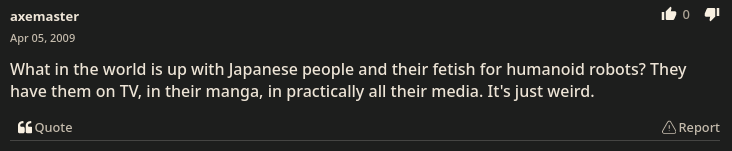

Intro
A lonely satellite orbits a decaying Earth, carving out drawings with its attack beams. Deserted, the autonomous satellite cries in its monotone voice, “ALWAYS ALONE.” In an episode of the TV show, Cowboy Bebop, the Earth’s government places a bounty on whoever was responsible for the satellites actions. Ed, a playful child with a hacker reputation, empathizes with the lonely robot, giving it the name MPU and trying to free it from its metal cage of a satellite body.

While fiction, this episode illustrates a possible dynamic between humans and robots. MPU was deserted, abandoned by humans, and left with loneliness. Ed treats MPU like a soul, opposed to those who deserted it, almost feeling as if Ed were trying to befriend it. In the real world, robots such as Jibo receive empathy; Van Camp describes in his article how he felt obligated to give his dying Jibo a proper goodbye. This brings the question: Can we befriend robots and is it right to do so? This problem is complex as we often perceive autonomous technology erroneously, and in fact, the reality of such technology is mostly unknown. As we navigate the obscure boundaries between life and machine, we should consider the questions on morality, sentience, and singularity.
Are Some Robots Creepier Than Others?
The robots mentioned above probably aren’t unsettling. However, when confronted with the absurdity of replicating a soul onto hardware to indefinitely extend it, one might reconsider the dangers of such technology. For one, it breaks the notion that everything begins and ends at some point. Miles Klee, in his article “Ever After,” discusses such irrationalities in the desire for immortality, referencing fictional ideas, such as zombies or vampires, which sustain themselves through “parasitic means.” In the context of the real world, the immortality of one person might depend on the infinite resources derived from a continuous workforce.
If such a scenario were to exist, what would the situation be like for the common folk? Would the under class be the mules, or their pawns of entertainment? Death seems to rule over all lives—all people die, and all wealth cannot be taken beyond the grave. But if the wealthy were able to cheat death, this could result in prolonged inequality and oppression. Such imaginations only represent one of many alarming paths.
Moreso, humans naturally judge a book by its cover. One might consider Alexa to be dull, corporate, and untrustworthy, while a realistic android to be supernatural and creepy. However, when greeted with a blend of tech and robotic personality such as Hitchbot, people might feel that such technology is trustworthy yet distinguishable from humans. This phenomenon is known as the Uncanny Valley, where hyper-realistic, almost-human tech evoke a sense of unease.

Take CB2, the robot depicted above. Clearly, it falls in the uncanny valley. Its wild movements, limp head jerks, and eerie facial expressions almost make it seem as if some demonic soul was trapped in this android cage. Besides the disturbing imagery, even the intentions of its creation are questionable—why would anyone want to create a child-like robot? Asada reveals that he “wants a robotic team of football players to be able to take on the human World Cup champions and win” (Phys.org). Is such an ambition moral towards the robots, and even if so, if they could out-sport us, could they replace us?
In that same story, another researcher explains that “Japanese people have a friendly image towards robots” because of culture icons such as “Astro Boy.” Even in the comments, there exists a divide; some speculate that such robots will become a household item parallel to household computers, while others are disturbed by such ambitions.
As evident, it’s hard to distinguish between tame and uncanny, but even so we often don’t see past our own viewpoints, and we often misunderstand the complete reality of such technology.
How do Scientists Understand Robots?
As of now, the state of AI relies mostly on mathematical models, with the main mechanism being described by one professor as “extracting statistical patterns from large data sets” (Metz). To many in the scientific community, AI is simply really good at pattern matching and assembling words together into a convincing sentence. It all feels like some magic trick, similar to how an Ouija board uses the ideometer effect to convince its users of a supernatural link to the spirits (McRobbie).
However some researchers are convinced of sentience in such AI. Metz mentions various researchers who were fooled by such models being able to “do”—a Google engineer who was convinced he was speaking to a “real person,” Rosenblatt who felt that his machine was alive because of a coincidence, Desdemona who thought that his robotic band member was sentient when it played well with the group.
Others argue that the machine’s way of “repeating patterns they … seen” is similar to how a “child just mimics what it sees from a parent” and “in the world around it.” To expand, we as humans learn things through trial and error, parallel to how ML models are trained by humans. Just like how we take in information and store it in our memory, ML models might store information in large datasets and analyze patterns in them to give an output. The main difference is that an ML model might not have human emotions. Undoubtedly, even the scientific community diverges in its stance on sentience, however the unknown still remains.
And if Jobi is Sentient Anyway?
As Kurzgesagt puts it in his video, nobody knows what consciousness is, so it is difficult to identify consciousness in a machine. But for a moment, let's assume that such robots are sentient anyway. Kurzgesagt explains in his video that typically rights protect an entity from suffering; is Jobi suffering when their servers are being shut down? Moreover, should we consider machines as equals? And are we responsible for any unjustness created between machines and humans?
Manufacturing robots for human benefit garners the same ethical questions as slavery. After all, robots feel the same pain as humans under labor right? The truth is that the moral boundaries are more complicated, and that it's difficult to compare robots and humans. For one, a robot likely wouldn’t mind you replacing one of their components, if anything they would appreciate that they are being fixed; however, to replace a person’s organ is a painful experience which requires extensive biological knowledge and likely prolonged periods of rehabilitation. Moreover, would a robot experience the same sensations as a traumatized person? The complexity of the human mind and body is simply too much overhead that might not exist in a simple machine.
To put it this way, asking if a sentient robot could feel pain is similar to asking if a plant can feel pain. Yes, plants don’t have pain receptors so they don’t feel pain in the same way as we understand (Petruzzello), but what if they felt it in a different way? And if so, it would be absurd to simply stop consuming plants because of the fact, so is it truly in our nature to judge the morality and reality of possible dynamics between humans and machines?
Moving Forward
The tale of Frankenstein illustrates the dangers of recreating sentience and the many misunderstandings that come with it. No one knows the truth about these machines, and we may never know if they are able to reach the sentience of the average human. To create a life form can be a blessing and a curse—a new soul is exposed to both the beauties and terrors of the world. But would a robot be able to experience and distinguish between these two opposites?
There exists so many speculations and fictional ideas on the future dynamics between robots and humans, but most of them, if not all of them are imperfect. It’s already difficult and complex enough to create justice among humans, so it is best to realize that the relationship between technology and humans is even more daunting.